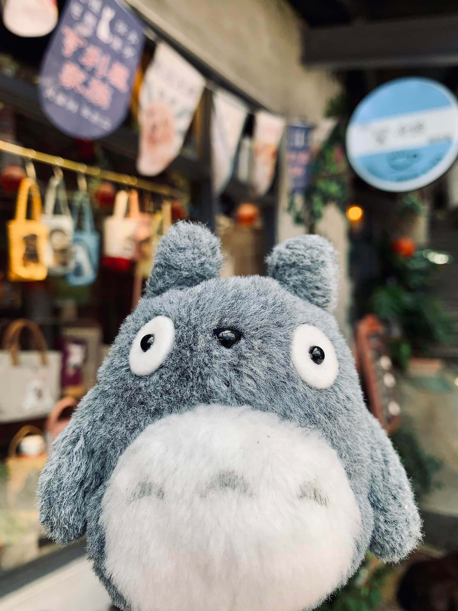

關於我
嗨！歡迎來到我的小角落。
我是資料工程師，每天的工作和程式、資料為伍，拆解、整理、轉換，讓數據能真正發揮價值。
雖然我的專業領域是科技，但其實我的人生經歷並不是一路直直走到這裡的。
在進入這行之前，我曾經在飯店工作，也待過物流業。
這些不同產業的經驗，讓我學會換位思考，也讓我習慣去觀察「數字背後的人與故事」。
比起只專注在技術，我更享受把資料和生活連結起來的過程。
我喜歡
工作之餘，我是個喜歡探索生活各種面向的人。
喜歡動物：和牠們相處總能感受到純粹的快樂。
喜歡植物與自然：從照顧小小的綠植，到旅行時接觸不同的風景，都是我療癒自己的方式。
喜歡旅行：走到新的地方，感受不同文化，讓我覺得生活更寬廣。
最近，我正挑戰自我，學習游泳與潛水。
水的世界很特別，學會放鬆、學會適應，甚至有點像在學另一種生活哲學。
為什麼寫這個網誌
寫這個網誌，是想把我的經驗、觀察和小小的喜歡記錄下來。
如果你剛好也喜歡動物、植物、旅行，或正在學習什麼新東西，也許我們能在這裡找到共鳴。
